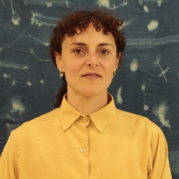

Lucila Guerrero
Edición #2 | Ilustración Botánica, Ivasiones Biológicas
Trabajo desde la cerámica con los modos de clasificación y de representación de especies vegetales. Desde 2017 desarrollo la obra Inventario de la Naturaleza en la que imprimo relieves de hojas, frutos y semillas sobre planchas de arcilla, haciendo exploraciones en distintas regiones.
Es un proyecto de investigación visual que toma herramientas y técnicas científicas para llevarlas a piezas artísticas. Utilizo la cerámica que posibilita la copia sensible. Trabajo desde la exploración de campo, observo, recolecto, clasifico, imprimo, registro, guardo en arcilla la forma. El trabajo busca Inventariar, catalogar y reflexionar sobre el paisaje, las especies y la ecología.
En esta oportunidad desarrollé una serie de piezas en cerámica de las plantas nativas y algunas piezas en yeso que doné a la residencia.
Dadas las condiciones del espacio tiempo para poder conectarse con el trabajo, estábamos estimulados por charlas y clases que giraban en torno a la agroecología, toda esta información fue impregnando la labor. Escribí unos textos, tomado de un libro que elegí para que me acompañara en el viaje. Este libro fue clave porque comencé a buscar información de palabras que iban apareciendo en relación a mis vivencias con el entorno. El trabajo tomó otro cuerpo además del inventario físico en cerámica, realicé con ayuda de mis compañerxs una cianotipia sobre tela, que incluía estos fragmentos de textos colectados del libro, que me disparaban a pensar sobre la existencia y el universo.
También realicé una copia de la punta de un filo de las sierras que nos rodeaban y acompañaron durante toda la estadía. Este trabajo también necesitó asistencia de traslado hasta el lugar con los materiales para poder hacerlo, todo el equipo de pastizal estaba predispuesto para poder realizarlo. Hay un registro en video de cómo fue tomada la copia.
Textos que salieron del habitar las sierras: Cielo y nubes Horizonte Solo horizonte A los costados Sierras y montañas Apiladas, Filosas, Finas Flechas Boleadora Piedra redonda La tuve en la mano La sentí Y la tiré Un impulso.
Para la comprensión del sentido simbólico de un paisaje hay que leer en él, lo prominente y lo accesorio, el carácter general, el carácter de sus elementos. La forma, el sentido de la configuración, sinuosa o quebrada, abrupta o llana, blanda o dura. Paisaje primitivo.
Para mantener el orden, los dioses lucharon contra los gigantes y los mounstros que desde el principio de la creación intentaban devorar el sol. Dejaron el león heroico en la montaña celeste. Cuatro arqueros siguen vigilando de dia y de noche para que nadie venga a trastornar el orden del cosmos.
Desplegarse Existir Extrañesa. Que provoca estrañarse? ¿Se extraña uno de lo ajeno? ¿O se da cuenta que es lo mismo? ¿Se extraña de sí mismo? Existencia Descubrir, observar, estar en el espacio. Habitarlo, experimentarlo con el cuerpo.
La piedra es el símbolo del ser, de la cohesión y la conformidad consigo mismo. La piedra entera simboliza la unidad y la fuerza. En los volcanes, el aire se transformaba en fuego, éste en agua y el agua en piedra. Por eso, la piedra constituya la primera solidificación del ritmo creador. La piedra es la música petrificada de a creación.